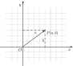
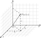

2 变换与坐标
2.1 变换群
- \(\text{Erlangen}\) 纲领：几何学的群论观点
- 设 \(S\) 是一个集合，\(G\) 是 \(S\) 上若干个一一变换的集合，若 \(G\) 对于变换的复合构成群，则称 \(G\) 为 \(S\) 上的一个变换群
- 给出集合 \(S\) 与其一个变换群 \(G\)，对于 \(A, B \subseteq S\)，如果在 \(f \in G\) 使得 \(f[A] = B\)，则称 \(A\) 与 \(B\) 等价，记作 \(A \approx B\)．则可证明「\(\approx\)」是一个等价关系
- 规定集合 \(S\) 称为空间，其元素称为点，其子集称为图形，凡是等价的图形属于同一个等价类
- 同一类的一切图形所共有的几何性质和几何量必是变换群下的不变性质和不变量
- 图形在变换群下的中的一切变换下的不变性质和不变量必是同一个等价类里一切图形所共有的性质
-
射影几何、仿射几何与 \(\text{Euclid}\) 几何的比较
名称 射影几何 仿射几何 \(\text{Euclid}\) 几何 变换群 射影群 仿射群 正交群 基本不变形 结合性 结合性、平行性 合同性 基本不变量 交比 单比 距离 基本不变图形 — 无穷远直线 —
2.2 射影几何
2.2.1 射影几何
-
射影几何：设 \(V^{n+1}\) 是体 \(F\) 上的 \(n+1\) 维线性空间，其中全体 \(1\) 维，\(2\) 维，\(\cdots\)，\(n\) 维子空间以及 \(V^{n+1}\) 所构成的集合称为 \(F\) 上的 \(n\) 维射影几何，记作 \(\boldsymbol{P}\left(V^{n+1}\right)\) 或 \(\boldsymbol{P}(V)\)．\(V^{n+1}\) 中的 \(1\) 维子空间称为「点」；\(2\) 维子空间称为「线」，\(\cdots\)，\(k+1\) 维子空间称为「\(k\) 维面」 \(\cdots\ n\) 维子空间称为「超平面」；\(V^{n+1}\) 本身称为 \(n\) 维射影空间，记作 \(P^n\) 或 \(F P^n\)
-
结合关系：设 \(V^{n+1}\) 是体 \(F\) 上线性空间，\(\boldsymbol{P}\left(V^{n+1}\right)\) 是相应 \(n\) 维射影几何．\(S\) 和 \(T\) 分别是 \(V^{n+1}\) 中 \(k+1\) 维和 \(l+1\) 维子空间
- 若 \(S \subseteq T\)，则称 \(k\) 维面 \(S\) 属于 \(l\) 维面 \(T\)
- \(S+T\) 称为 \(k\) 维面 \(S\) 与 \(l\) 维面 \(T\) 的联合
- \(S \cap T\) 称为 \(k\) 维面 \(S\) 与 \(l\) 维面 \(T\) 的交
- 若 \(S \cap T=0\)，则 \(S+T\) 称为 \(S\) 与 \(T\) 的直和，记成 \(S \oplus T\)
利用维数定理，可以证明如下命题
- 对于 \(2\) 维射影几何 \(\boldsymbol{P}\left(V^3\right)\)
- 不同两点的联合是一直线
- 不同两直线的交是一点
- 对于 \(3\) 维射影几何 \(\boldsymbol{P}\left(V^4\right)\)
- 两个不同点的联合是一直线
- 两个不同平面的交是一直线
- 两个不同的并且又是相交的直线的联合是一平面
- 两个不同的共面直线的交是一点
- 一点与不过此点的直线的联合是一平面
- 一平面与不在此平面上的直线的交是一点
-
同构：射影几何 \(P\) 和另一射影几何 \(P^{\prime}\) 之间的一一对应关系 \(\pi\)（即点对点，线对线等），称为射影几何间的同构．\(\pi\) 保持结合关系不变，即 \(\pi\) 满足条件 \(\forall M, N \in \boldsymbol{P} : M \subseteq N \Leftrightarrow \pi(M) \subseteq \pi(N)\)．如果存在这样的同构，则称射影几何 \(\boldsymbol{P}\) 与 \(\boldsymbol{P}^{\prime}\) 同构
- 对于两个射影几何的同构，有
- \(\pi(M+N)=\pi(M)+\pi(N)\)
- \(\pi(M \cap N)=\pi(M) \cap \pi(N)\)
- 如果 \(V\) 和 \(V^{\prime}\) 是同一体上的同维数的线性空间，则射影几何 \(\boldsymbol{P}(V)\) 和 \(\boldsymbol{P}\left(V^{\prime}\right)\) 同构
- 对于两个射影几何的同构，有
-
齐次向量：\(\boldsymbol{P}\left(V^{n+1}\right)\) 中的一个点 \(A=[x a]\) 的代表向量 \(a\) 称为这点的齐次向量
- \(\text{Desargues}\) 定理：设两个三点形1 \(A B C\) 和 \(A^{\prime} B^{\prime} C^{\prime}\) 的三对对边两两相交，交点为 \(L=B C \cap B^{\prime} C^{\prime}, M=C A \cap C^{\prime} A^{\prime}\) 与 \(N=A B \cap A^{\prime} B^{\prime}\)，则这两个三点形对应顶点的连线 \(A A^{\prime}, B B^{\prime}, C C^{\prime}\) 共点的充要条件是 \(L, M, N\) 三点共线
- \(\text{Pappus}\) 定理：对于域 \(F\) 上的射影几何 \(\boldsymbol{P}(V)\), 设 \(A, B, C\) 和 \(A^{\prime}, B^{\prime}, C^{\prime}\) 分别是两条共面直线 \(k\) 和 \(k^{\prime}\) 上的点．令 \(L=B^{\prime} C \cap B C^{\prime}, M=C^{\prime} A \cap C A^{\prime}\) 以及 \(N=A^{\prime} B \ \cap\) \(A B^{\prime}\)，则 \(L, M, N\) 三点共线
-
-
交比与调和点列：射影空间中的透视对应保持交比不变
- 交比：共线四点 \(A=[a], B=[b], C=[a+b], D=[\lambda a+\mu b]\) 的交比是 \((A B, C D)= \dfrac{\lambda}{\mu}\ (\lambda \mu \neq 0)\)
- 共线四点 \(A=[a], B=[b], C=\left[a+\lambda_1 b\right], D=\left[a+\lambda_2 b\right]\)，则 \((A B, C D)=\dfrac{\lambda_1}{\lambda_2}\)
- 共线四点 \(A=\left[a+\lambda_1 b\right], B=\left[a+\lambda_2 b\right], C=\left[a+\lambda_3 b\right], D=\left[a+\lambda_4 b\right]\)，则 \((A B, C D)=\dfrac{\left(\lambda_1-\lambda_3\right)\left(\lambda_2-\lambda_4\right)}{\left(\lambda_2-\lambda_3\right)\left(\lambda_1-\lambda_4\right)}\)
- 共线四点 \(A=\left[\lambda_1 a+\mu_1 b\right], B=\left[\lambda_2 a+\mu_2 b\right], C=\left[\lambda_3 a+\mu_3 b\right], D=\left[\lambda_4 a+\mu_4 b\right]\)，则 \((A B, C D)=\dfrac{\left(\lambda_3 \mu_1-\lambda_1 \mu_3\right)\left(\lambda_4 \mu_2-\lambda_2 \mu_4\right)}{\left(\lambda_3 \mu_2-\lambda_2 \mu_3\right)\left(\lambda_4 \mu_1-\lambda_1 \mu_4\right)}\)
- 共线四点 \(A=[a], B=[b], C=\left[\lambda_1 a+\mu_1 b\right], D=\left[\lambda_2 a+\mu_2 b\right]\)，则 \((A B, C D)=\dfrac{\lambda_2 \mu_1}{\lambda_1 \mu_2}\)
- 调和点列：设共线四点 \(A, B, C, D\)．若其交比 \((A B, C D)=-1\)，则称点偶 \(A, B\) 调和分割点偶 \(C, D\)，或称 \(A, B, C, D\) 是调和点列．设 \(A, B, C\) 三点共线，则唯一确定一点 \(D\)，使得 \(A, B, C, D\) 成调和点列
- 交比：共线四点 \(A=[a], B=[b], C=[a+b], D=[\lambda a+\mu b]\) 的交比是 \((A B, C D)= \dfrac{\lambda}{\mu}\ (\lambda \mu \neq 0)\)
-
对偶原理：射影几何 \(\boldsymbol{P}(V)\) 中的命题 \((P)\) 成立，当且仅当射影几何 \(\boldsymbol{P}\left(V^*\right)\) 中的对偶命题 \(\left(P^*\right)\) 成立
-
对偶空间：设 \(V\) 是体 \(F\) 上的 \(n+1\) 维线性空间，\(\left\{e_0, e_1, e_2, \cdots, e_n\right\}\) 是 \(V\) 的一组基底，\(V\) 上全体线性函数的集合记作 \(V^*=L(V, F)\)，称为 \(V\) 的对偶空间．在 \(V^*\) 中引人加法和数乘运算如下：对于 \(\forall f, g \in V^*, k \in F, v \in V\)
\[ \begin{aligned} (k f)(v) & =k f(v) \\ (f+g)(v) & =f(v)+g(v) \end{aligned} \]则 \(V^*\) 也是 \(F\) 上的线性空间
- 设 \(V\) 是 \(n+1\) 维线性空间，\(V^*\) 是 \(V\) 的对偶空间，则有 \(\operatorname{dim} V=\operatorname{dim} V^*=\) \(n+1\)
- 设 \(M\) 是 \(V\) 的子空间，\(M^0\) 是 \(V^*\) 的子空间，使得 \(M^0=\left\{f \in V^*: f(M)=0\right\}\)．称 \(M^0\) 为 \(M\) 的零化子空间，称 \(0: \boldsymbol{P}(V) \rightarrow \boldsymbol{P}\left(V^*\right), M \rightarrow M^0\) 为零化映射．零化映射 \(M \rightarrow M^0\) 是 \(V\) 的子空间到 \(V^*\) 的子空间上的一一映射，且有
- \(\operatorname{dim} M+\operatorname{dim} M^0=\operatorname{dim} V=\operatorname{dim} V^*\)
- \(M^{00}=M\)
- \(M \subseteq N \rightarrow M^0 \supset N^0\)
- \((M+N)^0=M^0 \cap N^0\)
- \((M \cap N)^0=M^0+N^0\)
-
对偶映射：零化映射 \(M \rightarrow M^0\) 给出 \(\boldsymbol{P}(V) \rightarrow \boldsymbol{P}\left(V^*\right)\) 的一一映射
- 对偶命题：对于射影几何 \(\boldsymbol{P}(V)\) 的一个结合命题 \((P)=\left\{M_1, M_2, \cdots, \subseteq,+, \cap\right\}\)，将 \(M_i\) 改成 \(M_i^0\)，\(\subseteq\) 改成 \(\supset\)，\(+\) 改成 \(\cap\)，\(\cap\) 改成 \(+\)，则得到 \(P\left(V^*\right)\) 中的一个结合命题 \(\left(P^*\right)= \left\{M_1^0, M_2^0, \cdots, \supset, \cap,+\right\}\)．\(\left(P^*\right)\) 称为 \((P)\) 的对偶命题
-
2.2.2 射影坐标
-
射影坐标：设 \(V\) 是体 \(F\) 上的 \(n+1\) 维线性空间．在 \(V\) 上选定一组基 \(\left\{a_0, a_1, a_2, \cdots, a_n\right\}\)，其确定了线性空间的同构
\[ \begin{gathered} f: V^{n+1} \rightarrow F^{n+1} \\ a=x_0 a_0+x_1 a_1+x_2 a_2+\cdots+x_n a_n \mapsto\left(x_0, x_1, x_2, \cdots, x_n\right) \end{gathered} \]该同构确定了射影变换
\[ \boldsymbol{P}(f): \boldsymbol{P}\left(V^{n+1}\right) \rightarrow \boldsymbol{P}\left(F^{n+1}\right) \]- 参考标架：称有序点组 \(\left\{\left[a_0\right],\left[a_1\right], \cdots,\left[a_n\right]\right\}\) 或 \(\left\{A_0, A_1, \cdots, A_n\right\}\) 为射影几何 \(\boldsymbol{P}\left(V^{n+1}\right)\) 的射影坐标系的参考标架；对于点 \(E\)，调整齐次向量 \(a_i\)，使得 \([e]=E=\left[a_0+a_1+\cdots+a_n\right]\)，则点组 \(\left\{A_0, A_1, \cdots, A_n, E\right\}\) 称为 \(\boldsymbol{P}\left(V^{n+1}\right)\) 的标准参考标架
- 齐次坐标与非齐次坐标：将 \(\left(x_0, x_1, x_2, \cdots, x_n\right)\) 称为 \(\boldsymbol{P}\left(V^{n+1}\right)\) 中点 \(A=[a]\) 的齐次坐标，且有 \(A_i=\left[a_i\right]=\left[\lambda a_i\right]\)；设点 \(P\) 的齐次坐标为 \(\left(x_0, x_1, x_2, \cdots, x_n\right),\ x_0 \neq 0\)，令 \(\overline{x}_1=\dfrac{x_1}{x_0}, \overline{x}_2=\dfrac{x_2}{x_0}, \cdots, \overline{x}_n=\dfrac{x_n}{x_0}\)，则称 \(\left(\overline{x}_1, \overline{x}_2, \cdots, \overline{x}_n\right)\) 为 \(P\) 点的非齐次射影坐标，简称为射影坐标
-
设 \(V\) 和 \(V^{\prime}\) 都是体 \(F\) 上的 \(n+1\) 维线性空间．\(\left\{A_0, A_1, A_2, \cdots, A_n, E\right\}\) 和 \(\left\{A_0^{\prime}, A_1^{\prime}, A_2^{\prime}, \cdots, A_n^{\prime}, E^{\prime}\right\}\) 分别是 \(n\) 维射影几何 \(\boldsymbol{P}(V)\) 和 \(\boldsymbol{P}\left(V^{\prime}\right)\) 的标准参考标架．则存在唯一的射影变换 \(\boldsymbol{P}(f)\)，使得 \(\boldsymbol{P}(f)\left(A_i\right)=A_i^{\prime}(i=0,1,2, \cdots, n), \boldsymbol{P}(f)(E)=E^{\prime}\)
2.2.3 射影变换
-
射影变换：设 \(V\) 和 \(V^{\prime}\) 是体 \(F\) 上两个线性空间，且 \(\operatorname{dim} V=\operatorname{dim} V^{\prime}\)，\(f: V \rightarrow V^{\prime}\) 是同构．其诱导的映射
\[ \boldsymbol{P}(f): \boldsymbol{P}(V) \rightarrow \boldsymbol{P}\left(V^{\prime}\right) \]称为射影变换
- 设 \(V, V^{\prime}\) 是体 \(F\) 上的两个线性空间，\(\operatorname{dim} V=\operatorname{dim} V^{\prime}\)．两个同构 \(f, g: V \rightarrow V^{\prime}\) 确定同一射影变换 \(\boldsymbol{P}(f)=\boldsymbol{P}(g)\) 的充要条件是存在数 \(\rho \in F\)，使得 \(g=\rho f\)
- 射影变换把共线点变成共线点，且保持交比不变
-
直射变换：设映射 \(f: V \rightarrow V\) 是线性空间 \(V\) 上的自同构，其所诱导的射影变换 \(P(f)\) : \(\boldsymbol{P}(V) \rightarrow \boldsymbol{P}(V)\) 称为射影几何 \(\boldsymbol{P}(V)\) 的直射变换．如果直射变换保持 \(\boldsymbol{P}(V)\) 中一个超平面上每一点不变，则称为中心直射
- 非恒同的中心直射，除了不变超平面 \(H\) 中的点外，有且只有一个不动点 \(A\)（可能在 \(H\) 上），称为直射中心
- 射影几何 \(\boldsymbol{P}(V)\) 的任何直射变换是有限个中心直射的乘积
-
对射变换：设 \(V\) 及 \(V^*\) 是体 \(F\) 上的 \(n+1\) 维线性空间．\(f\) 是同构，\(f: V \rightarrow V^*\)，\(f\) 诱导射影变换 \(\boldsymbol{P}(f): \boldsymbol{P}(V) \rightarrow \boldsymbol{P}\left(V^*\right)\)．\(0\) 是零化映射，\(0: \boldsymbol{P}\left(V^*\right) \rightarrow \boldsymbol{P}(V)\)，两个映射的组合 \(0\)．称 \(\boldsymbol{P}(f): \boldsymbol{P}(V) \rightarrow \boldsymbol{P}(V)\) 为 \(\boldsymbol{P}(V)\) 上的对射变换
- 设 \(M \in \boldsymbol{P}(V)\)，对射变换把 \(M\) 变成 \(\left(M^*\right)^0 \in \boldsymbol{P}(V)\)，则 \(\operatorname{dim} M+\operatorname{dim}\left(M^*\right)^0=\operatorname{dim} V\)
-
设 \(\alpha, \beta, \gamma, \delta\) 对应的齐次向量依次是 \(\left(\lambda_1 u+\mu_1 v\right),\left(\lambda_2 u+\mu_2 v\right),\left(\lambda_3 u+\mu_3 v^{\prime}\right),\left(\lambda_4 u+\mu_4 v\right)\)，则
\[ (\alpha \beta, \gamma \delta)=\dfrac{\left(\dfrac{\mu_1}{\lambda_1}-\dfrac{\mu_3}{\lambda_3}\right)\left(\dfrac{\mu_2}{\lambda_2}-\dfrac{\mu_4}{\lambda_4}\right)}{\left(\dfrac{\mu_2}{\lambda_2}-\dfrac{\mu_3}{\lambda_3}\right)\left(\dfrac{\mu_1}{\lambda_1}-\dfrac{\mu_4}{\lambda_4}\right)}=\dfrac{\left(\lambda_3 \mu_1-\lambda_1 \mu_3\right)\left(\lambda_4 \mu_2-\lambda_2 \mu_4\right)}{\left(\lambda_3 \mu_2-\lambda_2 \mu_3\right)\left(\lambda_4 \mu_1-\lambda_1 \mu_4\right)} \] -
设 \(\alpha, \beta, \gamma, \delta\) 是共轴超平面，任一直线 \(l\) 依次交 \(\alpha, \beta, \gamma, \delta\) 于 \(A, B, C, D\)，则 \((\alpha \beta, \gamma \delta)=(A B, C D)\)
- 对射变换把共线点映成共轴超平面，并保持交比不变
2.3 仿射几何
2.3.1 仿射几何
- 仿射几何：设 \(V^{n+1}\) 是一般体 \(F\) 上的 \(n+1\) 维线性空间，\(H\) 是 \(V\) 中一个固定的 \(n\) 维子空间．\(\boldsymbol{P}(V) - H\) 是 \(V\) 中所有的子空间，但不包括 \(H\) 和 \(H\) 的所有子空间的集合，再加 \(V - H\)，称为 \(F\) 上的 \(n\) 维仿射几何，记作 \(\boldsymbol{A}(V)\)．其中 \(V - H\) 中的一维子空间称为「点」，二维子空间称为「线」，\(\cdots\)，\(k+1\) 维子空间称为「\(k\) 维面」，\(\cdots\)，\(n\) 维子空间称为「超平面」．\(V - H\) 本身称为 \(n\) 维仿射空间，记作 \(A^n\) 或 \(A_F^n\)，\(V\) 中的 \(n\) 维子空间 \(H\) 称为仿射几何 \(\boldsymbol{A}(V)\) 的无穷远超平面
- 实仿射空间：当 \(F = \textbf{R}\) 时，称 \(V - H\) 为实 \(n\) 维仿射空间，记作 \(A^n\)
- 结合关系：如果 \(\boldsymbol{A}(V)\) 中的两个元素 \(S\) 和 \(T\) 满足 \(S \cap T \subseteq H\)，则称元素 \(S\) 和 \(T\) 是平行的
- 当 \(\operatorname{dim} V=3\) 时，二维仿射几何 \(\boldsymbol{A}(V)\) 中有下列结合关系
- 连接两点有一条直线
- 两条不平行的直线相交于一点
- 当 \(\operatorname{dim} V=4\) 时，三维仿射几何 \(\boldsymbol{A}(V)\) 中有下列结合关系
- 连接两点有一条直线
- 两个不平行的平面交于一条直线
- 过两条相交直线有一平面
- 共面的两条不平行直线交于一点
- 过两条平行直线有一平面
- 过一条直线和不在直线上的一点有一平面
- 一平面和与它不平行的直线交于一点
- 当 \(\operatorname{dim} V=3\) 时，二维仿射几何 \(\boldsymbol{A}(V)\) 中有下列结合关系
- 仿射几何中的定理
- 仿射 \(\text{Desargues}\) 定理：在仿射空间 \(\boldsymbol{A}(V)\) 中，如果两三点形的三对对应顶点连线交于一点或平行，则对应边相交或平行；三对对应边都相交时交点在一直线上
- 仿射 \(\text{Pappus}\) 定理：设点 \(A, B, C\) 和 \(A^{\prime}, B^{\prime}, C^{\prime}\) 分别在两条共面的直线上，再设 \(L=B C^{\prime} \cap B^{\prime} C, M=C A^{\prime} \cap C^{\prime} A\) 以及 \(N=A B^{\prime} \cap A^{\prime} B\)，则 \(L, M, N\) 三点共线
- 单比与有向距离
- 单比：仿射空间中共线三点 \(A, B, C\) 的单比记作 \((A B C)=\left(A B, C D_{\infty}\right)\)，其中 \(D_{\infty}\) 是直线与无穷远超平面的交点
- 定向：给定实 \(n\) 维仿射空间 \(A^n\) 中的直线 \(l\)，\(D\) 是其无穷远点，记为 \(D_{\infty}\)．则 \(l\) 上任一对点 \(A, B\) 确定了这条直线的定向．\(l\) 上任一点 \(P\) 有坐标 \(\lambda=\left(P B, A D_{\infty}\right)\)，规定 \(\lambda\) 增大的方向是直线 \(l\) 的正向，\(\lambda\) 减少的方向是直线 \(l\) 的负向，将正向记作 \(\overrightarrow{A B}\)
- 有向线段：如果仿射空间 \(A^n\) 中一条直线已经规定了正向，规定这条直线上任意两点所确定的线段的其中一点是始端，另一点是终端，则有从始端指向终端的方向．如果这个方向和直线的方向一致，则称这个线段为正向线段，否则为负向线段．将有向线段记作 \(\overrightarrow{P Q}\)，其中 \(P\) 是始端，\(Q\) 是终端
2.3.2 仿射变换
- 仿射坐标
- 仿射参考标架：设 \(V\) 是域 \(F\) 上的 \(n+1\) 维线性空间．对于射影几何 \(\boldsymbol{P}(V)\)，选定标准参考标架 \(\left\{A_0, A_1, A_2, \cdots, A_n, E\right\}\)，使得 \(A_0 \notin H, A_1, A_2, \cdots, A_n \in H, E \notin H\)，则这个标架称为仿射几何 \(\boldsymbol{A}(V)\) 的仿射参考标架
- 齐次坐标：在 \(V\) 中取一组基 \(\left\{a_0, a_1, a_2, \cdots, a_n\right\}\)，使得 \(a_1, a_2, \cdots, a_n \in H\) 且 \(A_0=\left[a_0\right], A_1=\left[a_1\right], \cdots, A_n=\left[a_n\right]\)，\(E=\left[a_0+a_1+a_2+\cdots+a_n\right]\)．则对于 \(\boldsymbol{P}(V)\) 中任一点 \(P=[p]\)，设 \(p=x_0 a_0+x_1 a_1+x_2 a_2+\cdots+x_n a_n\)，则 \(\left(x_0, x_1, x_2, \cdots, x_n\right)\) 称为点 \(P\) 对于标准参考标架 \(\left\{A_0, A_1, A_2, \cdots, A_n, E\right\}\) 的齐次坐标
- 仿射坐标：若 \(P \notin H\)，则 \(P\) 是 \(\boldsymbol{A}(V)\) 中的点，其齐次坐标 \(x_0 \neq 0\)．令 \(\widetilde{x}_1=\dfrac{x_1}{x_0}, \widetilde{x}_2=\dfrac{x_2}{x_0}, \cdots, \widetilde{x}_i=\dfrac{x_i}{x_0}, \cdots, \widetilde{x}_n=\dfrac{x_n}{x_0}\)，称 \(\left(\widetilde{x}_1, \widetilde{x}_2, \cdots, \widetilde{x}_n\right)\) 为 \(n\) 维仿射几何 \(\boldsymbol{A}(V)\) 中点 \(P\) 对于仿射参考标架 \(\left\{A_0, A_1, A_2, \cdots, A_n, E\right\}\) 的仿射坐标．对于 \(\boldsymbol{A}(V)\) 中一点 \(P\)，其齐次坐标 \(\left(x_0, x_1, x_2, \cdots, x_n\right)\) 可以差一个比例因子，但仿射坐标 \(\left(\widetilde{x}_1, \widetilde{x}_2, \cdots, \widetilde{x}_n\right)\) 唯一确定
- 仿射变换：\(\boldsymbol{P}(V)\) 的一个直射变换如果保持无穷远超平面 \(H\) 不变, 则称为 \(\boldsymbol{A}(V)\) 的仿射变换
- 若仿射变换 \(\boldsymbol{A}(f): \boldsymbol{A}(V) \rightarrow \boldsymbol{A}(V)\) 使线性无关点组 \(\left\{A_0, A_1, \cdots, A_n\right\}\) 分别对应线性无关的点组 \(\left\{A_0^{\prime}, A_1^{\prime}, A_2^{\prime}, \cdots, A_n^{\prime}\right\}\)，则这个仿射变换是唯一确定的
- 仿射几何 \(\boldsymbol{A}(V)\) 中，仿射变换 \(\boldsymbol{A}(f): \boldsymbol{A}(V) \rightarrow \boldsymbol{A}(V)\) 保持元素间的平行关系不变
- 仿射变换把共线点变成共线点，并保持单比不变
构造仿射空间的其他进路
-
线性空间的同构
-
\(\mathbf R^n\) 是 \(\mathbf R\) 上的线性空间：设 \((x_1, x_2, \cdots, x_n), (y_1, y_2, \cdots, y_n) \in \mathbf R^n\)，定义 \(\mathbf R^n\) 上的加法运算与 \(\mathbf R\) 上的数乘运算
\[ \begin{aligned} (x_1, x_2, \cdots, x_n) + (y_1, y_2, \cdots, y_n) &= (x_1 + y_1, x_2 + y_2, \cdots, x_n + y_n) \\ k(x_1, x_2, \cdots, x_n) &= (kx_1, kx_2, \cdots, kx_n) \end{aligned} \]并定义 \(\boldsymbol 0 = (0, 0, \cdots, 0)\)，则 \(\mathbf R^n\) 构成一个线性空间
-
任意 \(n\) 维线性空间 \(V\) 同构于线性空间 \(\mathbf R^n\)：线性空间 \(R^n\) 中的 \(n\) 个向量
\[ \begin{aligned} \boldsymbol \varepsilon_1 & = (1, 0, \cdots, 0) \\ \boldsymbol \varepsilon_2 & = (0, 1, \cdots, 0) \\ \cdots \\ \boldsymbol \varepsilon_n & = (0, 0, \cdots, 1) \end{aligned} \]称为空间 \(\mathbf R^n\) 的标准基．设线性空间 \(V\) 中向量 \(\boldsymbol \alpha\) 在基 \(\boldsymbol \eta_1, \boldsymbol \eta_2, \cdots, \boldsymbol \eta_n\) 下的坐标为 \(x_1, x_2, \cdots, x_n\)，即 \(\boldsymbol \alpha = \begin{bmatrix} x_1 & x_2 & \cdots & x_n \\ \end{bmatrix}^{\mathrm T}\)．构造同构映射 \(\varphi: V \to \mathbf R^n\) 为 \(\varphi(\boldsymbol \alpha) = (x_1, x_2, \cdots, x_n)\) 将线性空间 \(V\) 中的一组基变为空间 \(\mathbf R^n\) 中的给定基
-
-
仿射空间：设 \(\mathscr A\) 是一个集合，对于 \(\mathscr A\) 给出线性空间 \(V\) 与映射 \(v: \mathscr A \times \mathscr A \to V\)，使得
- 对任意 \(A \in \mathscr A\) 与向量 \(\boldsymbol \alpha \in V\)，存在唯一的点 \(B \in \mathscr A\) 使得 \(v(A, B) = \boldsymbol \alpha\)
- 对任意三点 \(A, B, C \in \mathscr A\) 有 \(v(A, B) + v(B, C) = v(A, C)\)
则称 \(\mathscr A\) 为与线性空间 \(V\) 相联系的仿射空间，并记 \(v(A, B) = \overrightarrow{AB} \ (A, B \in \mathscr A)\)
- 维度：\(\mathscr A\) 的维度为与之相联系的线性空间 \(V\) 的维度，记作 \(\operatorname{dim} {\mathscr A} = \operatorname{dim} V\)
- 任何线性空间都是一个仿射空间：设 \(V\) 是一个线性空间，定义 \(\overrightarrow{\boldsymbol \alpha \boldsymbol \beta} = \boldsymbol \beta - \boldsymbol \alpha\)，则 \(V\) 是一个仿射空间
-
仿射几何公理的完备性：任何维数相同的仿射空间都是同构的
- 设 \(\mathbf R^n\) 是与 \(\text{Euclid}\) 线性空间 \(\mathbf R^n\) 相联系的仿射空间．设 \(A = (a_1, a_2, \cdots, a_n), B = (b_1, b_2, \cdots, b_n)\)，并定义 \(\overrightarrow{AB} = (b_1 - a_1, b_2 - a_2, \cdots, b_n - a_n)\)，其中点 \(A\) 称为向量 \(\overrightarrow{AB}\) 的始点，点 \(B\) 称为向量 \(\overrightarrow{AB}\) 的终点
- 仿射空间的同构：设 \(\mathscr A, \mathscr B\) 是两个仿射空间，且相联系的线性空间 \(V, W\) 存在同构映射 \(\varphi: V \to W\)．若存在双射 \(\psi: \mathscr A \to \mathscr B\) 使得对于任意 \(A, B \in \mathscr A\)，均有 \(\overrightarrow{\psi(A) \psi(B)} = \varphi(\overrightarrow{AB})\)，则称 \(\mathscr A\) 与 \(\mathscr B\) 同构
- 设 \(\mathscr A\) 为任意仿射空间，任选 \(O \in \mathscr A\)．对任意 \(A \in \mathscr A\)，构造径向量（或称向径） \(\psi_O(A) = \overrightarrow{OA}\)，则 \(\mathscr A\) 同构于相联系被看作为仿射空间的线性空间 \(V\)
- 任何一个被看作仿射空间的 \(n\) 维线性空间同构于仿射空间 \(\mathbf R^n\)
- 仿射标架：设 \(\mathscr A\) 为仿射空间，\(V\) 为与之联系的线性空间，称 \(\mathscr A\) 中点 \(O\) 与基 \(\boldsymbol \varepsilon_1, \boldsymbol \varepsilon_2, \cdots, \boldsymbol \varepsilon_n\) 组成的集合称为 \(\mathscr A\) 中的仿射标架，记作 \([O; \boldsymbol \varepsilon_1, \boldsymbol \varepsilon_2, \cdots, \boldsymbol \varepsilon_n]\)，称点 \(O\) 为原点，称基所在的直线为坐标轴
- 每个仿射标架 \([O; \boldsymbol \varepsilon_1, \boldsymbol \varepsilon_2, \cdots, \boldsymbol \varepsilon_n]\) 确定一个同构 \(\psi: \mathscr A \to \mathbf R^n\)，称之为坐标同构．当 \(\psi(A) = (x_1, x_2, \cdots, x_n)\) 时，记作 \(A(x_1, x_2, \cdots, x_n)\)
- 当标架取定后，仿射空间与与之联系的线性空间与 \(\mathbf R^n\) 具有一一对应的关系，称之为坐标系．由仿射标架确定的坐标系称作仿射坐标系
- 直线：设 \(\mathscr A\) 是一个仿射空间，由点 \(M \in \mathscr A\) 与一个非零向量 \(\boldsymbol \alpha\) 给出的直线定义为使得 \(\overrightarrow{PM}\) 与 \(\boldsymbol \alpha\) 共线的点 \(P \in \mathscr A\) 的集合．称 \(\boldsymbol \alpha\) 为直线的方向向量，任意与直线的方向向量垂直的向量称为直线 \(l\) 的法向量
- 任何与 \(\boldsymbol \alpha\) 共线的向量称其与直线平行，则所有平行于一条直线的向量形成一个 \(1\) 维线性空间
- 通过仿射空间中的任意两个不同的点 \(M_1, M_2\) 有且仅有一条直线，记作 \(M_1M_2\)
- 称集合 \(\{M \mid \overrightarrow{M_1M} = t\overrightarrow{M_1M_2}, t \in [0, 1]\}\) 为以 \(M_1, M_2\) 为端点的线段，记作 \(\overline{M_1M_2}\)
- 设 \(M \subseteq \mathscr A\)，对 \(M\) 中的任意两点 \(M_1, M_2\)，必有 \(\overline{M_1M_2} \subseteq \mathscr A\)，则称 \(M\) 为 \(\mathscr A\) 中的凸集
2.4 Euclid 几何
2.4.1 Euclid 几何
- \(\text{Euclid}\) 空间：给定一个仿射空间，如果对于其任意两点都能定义它们之间的距离，且这个距离定义满足三角形不等式，则这个仿射空间就称为 \(\text{Euclid}\) 空间．\(\text{Euclid}\) 空间中全体点，线，\(\cdots\)，超平面的集合称为 \(\text{Euclid}\) 几何
- 有向距离：对于 \(\text{Euclid}\) 空间的有向线段 \(\overrightarrow{P Q}\)，定义有向距离 \(d(\overrightarrow{P Q})= \pm d(P Q)\)，其中正向线段取正号，否则取负号
- 实 \(\text{Euclid}\) 空间：任取 \(A^n\) 中两点 \(P=[a]\) 和 \(Q=[b]\)，定义其间的距离为 \(d(P Q)=d([a],[b])=|b-a|\)，则 \(A^n\) 是一个实 \(n\) 维 \(\text{Euclid}\) 空间，记作 \(E^n\)
- \(\text{Descartes}\) 坐标系与 \(\text{Descartes}\) 坐标：给出一个实 \(n+1\) 维线性空间 \(V\)，\(H\) 是它的一个超平面，\(V - H\) 确定一个实 \(n\) 维仿射空间 \(A^n\)．在 \(H\) 中引进正定内积 \(\tau\)，使其成为一个 \(\text{Euclid}\) 线性空间 \((H, \tau)\), 它确定了仿射空间 \(A^n\) 中两点之间的距离，使其成为一个 \(\text{Euclid}\) 空间 \(E^n\)
- 在 \((H, \tau)\) 中选一组标准基 \(\left\{e_1, e_2, \cdots, e_n\right\}\) 扩充成 \(V\) 的一组基 \(\left\{e_0, e_1, e_2, \cdots, e_n\right\}\)，命 \(A_i=\left[e_i\right](i=0,1,2, \cdots, n)\) 及 \(E=\left[e_0+e_1+e_2+\cdots+e_n\right]\)，称 \(\left\{A_0, A_1, A_2, \cdots, A_n, E\right\}\) 为 \(E^n\) 的 \(\text{Descartes}\) 坐标系．对 \(\forall P=[a] \in E^n\)，设 \({\displaystyle a=e_0+\sum_{i=1}^n x_i e_i}\)，则 \(\left(x_1, x_2, \cdots, x_n\right)\) 称为点 \(P=[a]\) 的 \(\text{Descartes}\) 坐标
- 在 \((H, \tau)\) 中选一组标准正交基 \(\left\{e_1, e_2, \cdots, e_n\right\}\) 扩充成 \(V\) 的一组基 \(\left\{e_0, e_1, e_2, \cdots, e_n\right\}\)，命 \(A_i=\left[e_i\right](i=0,1,2, \cdots, n)\) 及 \(E=\left[e_0+e_1+e_2+\cdots+e_n\right]\)，称 \(\left\{A_0, A_1, A_2, \cdots, A_n, E\right\}\) 为 \(E^n\) 的 \(\text{Descartes}\) 直角坐标系．对 \(\forall P=[a] \in E^n\)，设 \({\displaystyle a=e_0+\sum_{i=1}^n x_i e_i}\)，则 \(\left(x_1, x_2, \cdots, x_n\right)\) 称为点 \(P=[a]\) 的 \(\text{Descartes}\) 直角坐标
-
常见的 \(\text{Descartes}\) 直角坐标系
- 数轴：\(1\) 维 \(\text{Descartes}\) 直角坐标系．由于每个实数与数轴上的点一一对应，因此也将数轴称作（\(1\) 维）连续统
-
平面直角坐标系：\(2\) 维 \(\text{Descartes}\) 直角坐标系．习惯称基向量 \(\boldsymbol e_1\) 与 \(\boldsymbol e_2\) 对应的两个坐标轴为 \(x\) 轴与 \(y\) 轴，记坐标系为 \(xOy\)．两个坐标轴将平面分成四个象限
 象限 点集 象限 点集 第一象限 \(\{(x, y) \mid x>0, y>0\}\) 第三象限 \(\{(x, y) \mid x<0, y<0\}\) 第二象限 \(\{(x, y) \mid x<0, y>0\}\) 第四象限 \(\{(x, y) \mid x>0, y<0\}\) -
空间直角坐标系：\(3\) 维 \(\text{Descartes}\) 直角坐标系．习惯称基向量 \(\boldsymbol e_1, \boldsymbol e_2\) 与 \(\boldsymbol e_3\) 对应的三个坐标轴为 \(x\) 轴，\(y\) 轴与 \(z\) 轴，记坐标系为 \(Oxyz\)．三个坐标轴将平面分成八个卦限
 卦限 点集 卦限 点集 第一卦限 \(\{(x, y, z) \mid x>0, y>0, z>0\}\) 第五卦限 \(\{(x, y, z) \mid x>0, y>0, z < 0\}\) 第二卦限 \(\{(x, y, z) \mid x<0, y>0, z>0\}\) 第六卦限 \(\{(x, y, z) \mid x<0, y>0, z < 0\}\) 第三卦限 \(\{(x, y, z) \mid x<0, y<0, z>0\}\) 第七卦限 \(\{(x, y, z) \mid x<0, y<0, z < 0\}\) 第四卦限 \(\{(x, y, z) \mid x>0, y<0, z>0\}\) 第八卦限 \(\{(x, y, z) \mid x>0, y<0, z < 0\}\)
-
\(\text{Euclid}\) 空间下的坐标系
-
极坐标系：\(E^2\) 中的一个顶点 \(O\) 与基 \(\boldsymbol e\) 组成了一个极坐标系，称 \(O\) 为极点，\(\boldsymbol e\) 所在的直线为极轴．任意有序数对 \((\rho, \theta)\)（其中 \(\rho \geqslant 0, -\pi < \varphi \leqslant \pi\)）唯一对应了平面中的点 \(P\)，其中 \(\rho = |\overrightarrow{OP}|\)，\(\theta\) 为 \(\overrightarrow{OP}\) 与 \(\boldsymbol e\) 的夹角．并称 \(\rho\) 为极径，称 \(\theta\) 为极角，称 \((\rho, \theta)\) 为点 \(P\) 的极坐标，记作 \(P(\rho, \theta)\)
-
极坐标化为平面直角坐标
\[ \left\{\begin{aligned} & x = \rho \cos \theta \\ & y = \rho \sin \theta \end{aligned}\right. \ \left(\begin{array}{l} \rho \geqslant 0 \\ -\pi < \varphi \leqslant \pi \end{array}\right) \] -
平面直角坐标化为极坐标
\[ \left\{\begin{aligned} & \rho^2 = x^2 + y^2 \\ & \tan \theta = \dfrac{y}{x} \end{aligned}\right. \]
-
-
球坐标系：\(E^3\) 中的一个顶点 \(O\) 与不共线的基 \(\boldsymbol e_1, \boldsymbol e_2\) 组成了一个球坐标系，称 \(O\) 为原点．设 \(\overrightarrow{OP}\) 在 \(\mathrm{span}(\boldsymbol e_1, \boldsymbol e_2)\) 的正交投影为 \(\overrightarrow{OM}\)，则任意 \(3\) 元有序组 \((\rho, \varphi, \theta)\)（其中 \(\rho \geqslant 0, -\pi<\varphi \leqslant \pi, -\dfrac{\pi}{2} \leqslant \theta \leqslant \dfrac{\pi}{2}\)）唯一对应空间中的点 \(P\)，其中 \(\rho = |\overrightarrow{OP}|\)．则 \(\varphi\) 表示 \(\overrightarrow{OM}\) 与 \(\boldsymbol e_1\) 的夹角，\(\theta\) 是 \(\overrightarrow{OP}\) 与 \(\overrightarrow{OM}\) 的夹角．称 \((\rho, \varphi, \theta)\) 为点 \(P\) 的球坐标，记作 \(P(\rho, \varphi, \theta)\)
-
球坐标化为空间直角坐标
\[ \left\{\begin{array}{l} x=\rho \cos \theta \cos \varphi \\ y=\rho \cos \theta \sin \varphi \\ z=\rho \sin \theta \end{array}\right. \ \left(\begin{array}{l} \rho \geqslant 0 \\ -\pi<\varphi \leqslant \pi \\ -\dfrac{\pi}{2} \leqslant \theta \leqslant \dfrac{\pi}{2} \end{array}\right) \] -
空间直角坐标化为球坐标
\[ \left\{\begin{array}{l} \rho=\sqrt{x^2+y^2+z^2} \\ \cos \varphi=\dfrac{x}{\sqrt{x^2+y^2}} \\ \sin \varphi=\dfrac{y}{\sqrt{x^2+y^2}} \\ \theta=\arcsin \dfrac{z}{\sqrt{x^2+y^2+z^2}} \end{array}\right. \]
-
-
柱坐标系：\(E^3\) 中的一个顶点 \(O\) 与正交的两个基 \(\boldsymbol e_1, \boldsymbol e_2\) 组成了一个柱坐标系，也称作半极坐标．点 \(O\) 与基 \(e_1\) 组成一个平面上的极坐标系．设 \(\overrightarrow{OP}\) 在 \(\mathbf N(\boldsymbol e_1)\) 的正交投影为 \(\overrightarrow{OM}\)，则任意 \(3\) 元有序组 \((\rho, \varphi, u)\)（其中 \(\rho \geqslant 0, -\pi< \varphi \leqslant \pi, u \in \mathbf R\)）唯一对应了空间中的点 \(P\)，其中 \((\rho, \varphi)\) 是 \(\overrightarrow{OM}\) 在点 \(O\) 与基 \(e_1\) 形成的极坐标系下的坐标，\(|u| = |\overrightarrow{MP}|\)．称 \((\rho, \varphi, u)\) 为点 \(P\) 的球坐标，记作 \(P(\rho, \varphi, u)\)
-
柱坐标化为空间直角坐标
\[ \left\{\begin{array}{l} x=\rho \cos \varphi \\ y=\rho \sin \varphi \\ z=u \end{array}\right. \ \left(\begin{array}{l} \rho \geqslant 0 \\ -\pi< \varphi \leqslant \pi \\ u \in \mathbf R \end{array}\right) \] -
空间直角坐标化为柱坐标
\[ \left\{\begin{array}{l} \rho=\sqrt{x^2+y^2} \\ \cos \varphi=\dfrac{x}{\sqrt{x^2+y^2}} \\ \sin \varphi=\dfrac{y}{\sqrt{x^2+y^2}} \\ u=z \end{array}\right. \]
-
-
-
复点：若 \(n\) 维 \(\text{Desvartes}\) 坐标系的坐标 \((x_1, x_2, \cdots, x_n)\) 中至少有一个是虚数，则称其为虚点，否则称其为实点．若两个虚点的对应坐标都是共轭复数，那么这两点称作一对共轭虚点，实点与虚点统称为复点
- 复向量：若向量 \(\overrightarrow{AB} = (x_1, x_2, \cdots, x_n)\) 中至少有一个虚数，则称其为虚向量，否则称实向量．实向量与虚向量统称为复向量
- 复直线：平面上直线的一般式方程为 \(Ax + By + C = 0\)．若 \(A, B, C\) 与三个实数成比例，那么直线为实直线，否则为虚直线．实直线与虚直线统称为复直线
-
复数的几何表示：在平面上建立直角坐标系 \(O x y\) 后，复数与平面上的点（或向量）建立起一一对应．采用极坐标，则复数有三角表示 \(z=r(\cos \varphi+\mathrm i \sin \varphi)=r e^{\mathrm i \varphi}\)，称 \(\varphi\) 为 \(z\) 的辐角，并将辐角在 \(-\pi<\varphi \leqslant \pi\) 内的值称为辐角的主值，记作 \(\arg z\)
-
一般有
\[ \arg z= \left\{\begin{aligned} & \arctan \dfrac{y}{x}, & x>0 \\ & \pi+\arctan \dfrac{y}{x}, & x<0, y>0 \\ & -\pi+\arctan \dfrac{y}{x}, & x<0, y<0 \end{aligned}\right. \] -
复数乘法的几何意义
- \(\left|z_{1} z_{2}\right|=\left|z_{1}\right|\left|z_{2}\right|, \operatorname{arg}\left(z_{1} z_{2}\right)=\operatorname{arg} z_{1}+\operatorname{arg} z_{2}\)
- \(\left|\dfrac{z_{1}}{z_{2}}\right|=\dfrac{\left|z_{1}\right|}{\left|z_{2}\right|}, \operatorname{arg}\left(\dfrac{z_{1}}{z_{2}}\right)=\operatorname{arg} z_{1}-\operatorname{arg} z_{2}\)
-
设 \(n\) 是复数，则方程 \(\omega^{n} = z\) 有 \(n\) 个互不相同的解
\[ \begin{aligned} w_{0} & =\sqrt[n]{r}\left(\cos \dfrac{\varphi}{n}+i \sin \dfrac{\varphi}{n}\right) \\ w_{1} & =\sqrt[n]{r}\left(\cos \dfrac{\varphi+2 \pi}{n}+i \sin \dfrac{\varphi+2 \pi}{n}\right) \\ & \ \ \vdots \\ w_{n-1} & =\sqrt[n]{r}\left(\cos \dfrac{\varphi+2(n-1) \pi}{n}+i \sin \dfrac{\varphi+2(n-1) \pi}{n}\right) \end{aligned} \]这 \(n\) 个 \(n\) 次根的模位于以原点为中心、以 \(\sqrt[n]{r}\) 为半径的圆上，且这 \(n\) 个点刚好将圆周分成 \(n\) 等分
-
2.4.2 Euclid 变换
- 正交变换：对于线性映射 \(f: H \rightarrow H\)，如果 \(f\) 保持度量 \(\tau\) 不变，即 \(\forall a, b \in H: \tau(f(a), f(b))=\tau(a, b)\)，则 \(f\) 称为 \(\text{Euclid}\) 线性空间 \((H, \tau)\) 的正交变换
- 保持长度不变的线性映射是正交变换
- 正交变换的坐标表示中的系数矩阵是正交矩阵
- 合同变换：若实 \(n\) 维 \(\text{Euclid}\) 空间上的仿射变换保持长度不变，则称其为实 \(\text{Euclid}\) 空间 \(E^n\) 中的合同变换
几何变换的分类
- 特殊的仿射变换
- 位似变换：平移变换、恒同变换、各向同性放缩变换
- 相似变换：平移变换、恒同变换、旋转变换、各向同性放缩变换
- 合同变换：平移变换、恒同变换、旋转变换、中心对称变换、反射变换
- 刚体变换2：平移变换、恒同变换、旋转变换
- 特殊的线性变换
- 正交变换：恒同变换、旋转变换、中心对称变换、反射变换